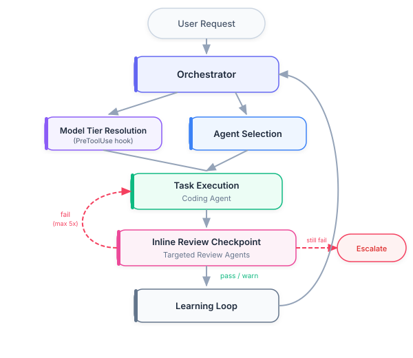
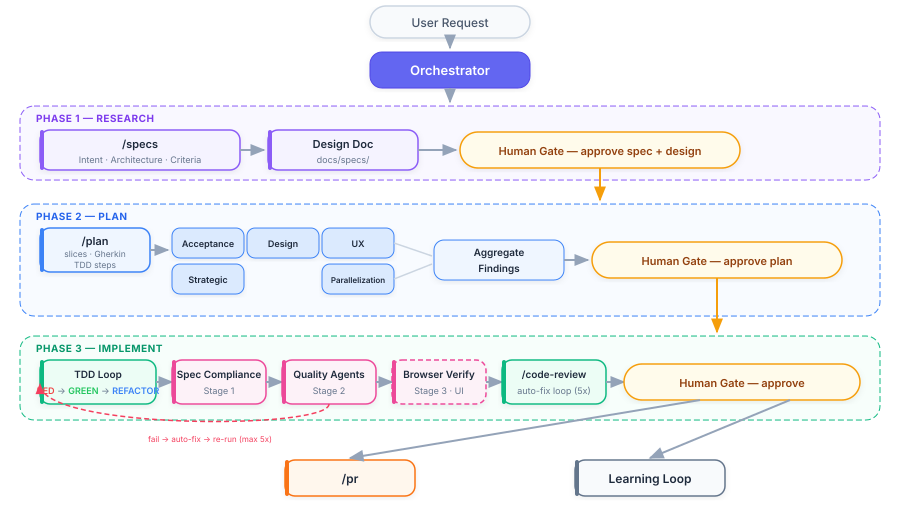
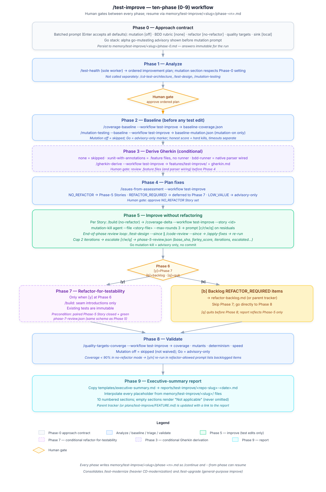

Architecture¶
Reading order: Start with the System Overview flowchart, then read Context Management to understand how agents are loaded and unloaded, followed by Quality Assurance for the validation sequence during Phase 3.
On this page: System Overview · Three-phase workflow · Model Routing · Knowledge Index · Review-Fix Loop · Test improvement workflow · Context Management · Plan Review Personas · Quality Assurance · Human Oversight · Governance · Feedback Loop · Performance Targets
System Overview¶

The Orchestrator receives every request, classifies it by type and complexity, selects agents, assigns models, and coordinates delivery. During Phase 3 (Implement), review agents check coding agent output at each discrete unit-of-work checkpoint. Findings feed back as structured corrections (max 2 cycles before human escalation). After each task, the learning loop captures metrics and evaluates whether configuration updates are needed.
Three-phase workflow¶
Feature work flows through three phases — Research → Plan → Implement — with a human gate between each. Research turns a request into approved specs (/specs produces Intent, Architecture, and Acceptance Criteria) plus a design doc; Plan decomposes them into vertical slices, authors each slice's Gherkin scenarios, and lays out the TDD steps, which up to five critic personas (Acceptance, Design, UX, Strategic, Parallelization — the set scales to plan tier) challenge before the human approves; Implement runs the per-behavior build loop — Code-First Small Batches (IMPLEMENT → TEST → REFACTOR), the sole build cadence — with a three-stage inline review (spec-compliance, quality agents, and browser verification for UI changes) and a /code-review gate, then opens the PR and feeds the learning loop.

Model Routing¶
Each agent declares model: (an alias, a full model ID, or inherit) and effort: (low|medium|high|xhigh|max) directly in its frontmatter — the native Claude Code sub-agent contract, resolved by the harness itself before dispatch. There is no plugin-side resolution hook, routing map, or per-environment ladder file (ADR 0026 retired that machinery once the native fields were confirmed to already provide it). See agents/orchestrator.md → Model/Effort Resolution.
Knowledge Index¶
knowledge/index.json is a deterministic, checked-in catalog of every H2/H3 section across knowledge/**.md and skills/**/SKILL.md. Each entry has a one-sentence summary and a slugified GitHub-style anchor. Agents that reference knowledge files cite an anchor (e.g. knowledge/owasp-detection.md#a03-injection) and read only the relevant section via offset/limit. Four freshness gates keep the index current: (1) PostToolUse hook auto-regen on save, (2) pre-commit sibling hook blocks stale commits, (3) tests/repo/test_knowledge_index_current.py runs in CI, (4) tests/agents/test_agent_knowledge_anchor.py validates every reference resolves. See agents/orchestrator.md → Knowledge index — consumer usage pattern for the canonical lookup flow, and hooks/lib/build_knowledge_index.py --check for ad-hoc verification.
Review-Fix Loop¶
Both inline review checkpoints (Phase 3) and /code-review use the same review-fix loop: targeted agents run in parallel, actionable issues (error/warning severity with high/medium confidence) are auto-fixed, and only the agents that reported issues are re-run against the modified files. The loop converges in up to 5 iterations or escalates to a human. /code-review is the final gate before commit.
For the full pipeline — targeting, pre-flight gates, static analysis pre-pass, ACCEPTED-RISKS suppression, fix-loop exit conditions, report generation, and the .pr-review-passed gate file — see Code Review Process.
Test improvement workflow (/test-improve)¶
/test-improve is the consolidated analyze-then-improve orchestrator for legacy or in-flight test suites. It defaults to lightweight ceremony, prompts for heavier capabilities on demand, and always baselines coverage (and mutation, when enabled) before any test change.

It runs ten phases (0-9) with a human gate between each, every phase writing a progress file at .claude/memory/test-improve/<slug>/phase-<n>.md so /continue (and --from-phase) can resume. The full phase-by-phase reference — gates, arguments, and the flow diagram — lives on its own page: test-improve.md.
Context Management¶
The Orchestrator manages context utilization using two operational skills.
Loading Protocol¶
Context Loading Protocol controls what gets loaded and when:
- Classify the task (simple, standard, multi-agent, complex)
- Select the minimum set of agents and skills required
- Load in phases: primary agent first, supporting agents as their phase begins
- Unload previous-phase agents via summarization before loading next-phase agents
Summarization¶
Handoff (continue mode) controls when to compress:
| Utilization | Action |
|---|---|
| < 40% | Normal operation |
| 40-50% | Prepare for summarization |
| 50-60% | Summarize older conversation turns |
| 60-75% | Aggressive summarization |
| 75%+ | Write summary to .claude/memory/, start new conversation |
Utilization is estimated via proxy signals (tool call volume, message count, accumulated file reads) as described in the Context Loading Protocol. Summaries follow a structured template and are stored in .claude/memory/ for cross-session continuity.
Token Budgets¶
| Component | ~Tokens |
|---|---|
| CLAUDE.md (always loaded) | ~800 |
| Single team agent | 290-560 |
| Single skill | 420-1,020 |
| All team agents (no skills) | ~3,590 |
| All review agents | ~3,100 (sub-agents, not loaded in parent context) |
| Knowledge files | ~3,450 (loaded on demand by agents) |
| Plan review persona agents | ~1,800 (loaded by orchestrator when dispatching) |
| Full load (all team agents + all skills) | ~18,100 |
A typical task loads 1 agent + 1-2 skills: roughly 1,000-2,000 tokens of configuration overhead. Review agents and plan review personas run as isolated sub-agents — their context burden does not accumulate in the parent.
Subagent status checks¶
A subagent's progress or status reaches a live orchestrating agent's context only as its structured summary output — the verdict/findings contract the Agent tool already returns — never as a raw transcript read. Pulling a running subagent's full transcript into the orchestrator's working context is the failure mode Martin Fowler's "The Orchestrator's Tax" warns about: unlike a one-time token bill, that transcript then persists and degrades every subsequent turn. The Agent tool's contract already enforces this — it returns only final text/schema output, not a transcript — so the failure cannot occur through the standard dispatch path; this subsection states the rule explicitly for future tool and skill authors.
Offline-resume exception. The Workflow tool's resume mechanism legitimately reads journal.jsonl / agent-<id>.jsonl transcript files to reconstruct cached results for continuation. That is an offline diagnostic read, not a feed into a live orchestrator's context, and is fine. The constraint targets specifically a raw-transcript read flowing back into an active orchestrating agent's working context.
Plan Review Personas¶
Before the human reviews a plan (Phase 2), a tier-scaled set of critical review personas runs in parallel as sub-agents. The reviewer set scales to a plan tier (trivial/standard/complex, derived from slice count, file count, per-step complexity, and whether the plan takes a stance on any high-reversal-cost decision axis) so a one-function plan does not pay a complex feature's review ceremony: trivial runs the Acceptance Test Critic alone, standard adds the Design & Architecture Critic (plus the UX Critic for user-facing plans and the Parallelization Critic when the slice count > 1), and complex runs all five. The Acceptance Test Critic always runs; the Parallelization Critic runs only when slice count > 1. Each persona challenges the plan from a distinct perspective:
| Persona | Agent | What It Challenges |
|---|---|---|
| Acceptance Test Critic | agents/plan-review-acceptance.md |
Per-slice Gherkin quality (determinism, isolation, completeness), criteria verifiability, error-path coverage, TDD step traceability |
| Design & Architecture Critic | agents/plan-review-design.md |
Dependency direction, abstraction quality, structural risks, pattern consistency |
| Parallelization Critic | agents/plan-review-parallelization.md |
Same-wave independence: file-overlap collisions (plan_waves.py), disjoint-file behavioral coupling, residual cycles |
| Strategic Critic | agents/plan-review-strategic.md |
Problem-solution fit, scope assessment, risk analysis, opportunity cost |
| UX Critic | agents/plan-review-ux.md |
User journey, error experience, cognitive load, accessibility (self-skips for non-UI plans) |
Each persona is a registered agent, dispatched by subagent_type like any other agent — /plan step 5b no longer needs a dispatch-time model: override; the harness reads each persona's own model:/effort: frontmatter natively.
Each reviewer returns a structured approve or needs-revision verdict. If any reviewer flags blockers, the plan is revised before the human sees it (max 2 iterations). Warnings from the dispatched reviewers are aggregated into a Plan Review Summary appended to the plan file, which also records the chosen tier and reviewer set so the scaling decision is auditable.
This gate catches problems when they cost minutes to fix (in a plan), not hours (in code).
Quality Assurance¶
Validation happens in this sequence during Phase 3:
| Order | Layer | Who | When |
|---|---|---|---|
| 1 | Self-validation | Active agent | Before delivering any unit of work |
| 2 | Inline review checkpoint | Targeted review agents | After each discrete unit of work |
| 3 | Review feedback correction | Coding agent | Up to 2 correction cycles per checkpoint |
| 4 | Final code review | /code-review |
Before committing; auto-scopes to uncommitted changes, runs full agent suite with fix loop |
| 5 | Documentation review | Tech-writer | After code review passes; verifies docs reflect current behavior |
| 6 | Peer validation | QA agent | After implementation, before phase delivery |
| 7 | Human gate | User | At each phase transition (Research, Plan, Implement) |
| 8 | Post-hoc monitoring | Orchestrator | During learning loop after task completion |
Every agent applies the Quality Gate Pipeline before output. This includes self-validation (Phase 1: factual accuracy, instruction fidelity, consistency, confidence scoring), verification evidence (Phase 2), and review-correction loops (Phase 3).
Quality gates by task type:
| Task Type | Required Gates |
|---|---|
| Code implementation | Self-validation + QA review |
| Architecture design | Self-validation + human approval |
| Documentation | Self-validation + terminology check |
| Bug fix | Self-validation + regression test |
| Data analysis | Self-validation + statistical validation |
Human Oversight¶
Agents operate autonomously within boundaries. The Human Oversight Protocol defines three levels of human involvement:
| Level | When | Example |
|---|---|---|
| Autonomous | Routine work within scope | Writing a unit test |
| Notify | Significant but within scope | Choosing between two valid patterns |
| Approve | High-impact or outside scope | Database schema change, production deploy |
Intervention commands (override, pause, stop) give humans immediate control when needed.
Governance¶
Governance & Compliance defines audit and ethics requirements:
- All task completions logged to
.claude/metrics/(JSONL format) - All configuration changes logged to
.claude/metrics/config-changelog.jsonl - Conversation summaries stored in
.claude/memory/for cross-session continuity - Significant routing and architectural decisions logged to
.claude/memory/decisions.md - Sensitive data (credentials, PII) never stored in metrics or memory files
- All agent decisions must be explainable on request
Pre-Execution Hook Pipeline¶
A PreToolUse hook (hooks/pre_tool_guard.py) intercepts every Write and Edit call before execution:
| Action | Trigger | Behavior |
|---|---|---|
| Block | Path matches blocked_paths in guards.json |
Exit 2 — write cancelled, message shown |
| Warn | Path matches warn_paths in guards.json |
Exit 0 — write proceeds, warning shown |
| Allow | No match | Exit 0 — write proceeds silently |
Default blocked patterns: .env, *.pem, *.key, *.p12, *.pfx, *credential*, *secret*, *.token. Configurable via .claude/hooks/guards.json.
Destructive Command Guard¶
A second PreToolUse hook (hooks/destructive_guard.py) monitors Bash tool calls for destructive commands: file deletion (rm -rf), database drops (DROP TABLE), git destruction (force-push, reset --hard), process killing, and permission escalation. Patterns are configurable via hooks/destructive-commands.json, which also includes a safe_allowlist for routine operations like rm -rf node_modules.
By default, destructive commands produce a warning (exit 0). When /careful mode is active, they are blocked (exit 2).
Pre-PR Review Gate¶
A PreToolUse hook on gh pr create (hooks/pre_pr_review.py, #1886) blocks opening the PR (exit 2) unless .claude/memory/.pr-review-passed carries a hash matching the branch's current diff vs. its base, corroborated by genuine review-agent dispatch evidence. git commit is no longer gated: a branch may accumulate any number of local commits without triggering a review-agent panel; the hard block fires once, against the branch's full diff, at PR-creation time. (hooks/pre_commit_review.py, the former commit-time gate, is now a documented no-op.)
/code-review's own gate-file write (step 9, Code Review Process → Pre-PR gate file) now writes .pr-review-passed bound to the branch-diff hash this gate reads, when the review was auto-scoped to uncommitted changes and passed. Known residual gap (#1886 follow-up): agent_dispatch_ledger.py still stamps dispatch evidence with the staged-diff hash, not the branch-diff hash, so this only lines up automatically in the common single-commit-then-PR shape — a branch with multiple separate review-and-commit cycles needs a fresh /code-review run against its current diff right before gh pr create, or falls back to the audited PR_GATE_BYPASS_REASON escape hatch below.
Reasoned bypass. Setting a non-empty PR_GATE_BYPASS_REASON env var allows gh pr create through even without a passing gate — gh has no --no-verify-shaped flag to key a bypass off, so the env var alone is both the trigger and the reason. When present, the bypass is logged — timestamp, branch, reason, branch-diff file count — to .claude/metrics/gate-bypass-audit.jsonl (#709/#1886), unconditionally:
Code-Intelligence Nudge¶
A PreToolUse hook (hooks/code_intelligence_nudge.py) registered on Read, Grep, and Glob detects which of CodeGraph (.codegraph/), Repowise (.repowise/), and Graphify (graphify-out/graph.json) are present in the project and recommends whichever are present and not yet used this turn over multi-file exploration — composing a single-tool message when only one is present, or a combined, precedence-ordered message (Graphify, then Repowise, then CodeGraph) when two or more are. The hook is silent for single-file Read calls, for Grep with a regular-file path, for Glob with a literal pattern, and for any tool already used earlier in the current turn (tracked via a sentinel accumulating tools_used, written by a companion PostToolUse hook on mcp__codegraph__.* and mcp__plugin_repowise_repowise__.*). Warns to stderr by default; blocks (exit 2) under /careful. Fail-open posture throughout — any internal error, or a missing/malformed detection or sentinel surface, exits 0. See docs/code-intelligence-nudge.md for the full mechanism.
Context Ceiling Guard¶
A PreToolUse hook (hooks/context_ceiling_guard.py) registered on Agent and Skill enforces the 40% Context Window Rule — see Context Loading Protocol → Why 40% for why 40% is a conservative planning target, not a claimed accuracy cliff. Before a capability-loading call it measures utilization = (input + cache_read + cache_creation) / model_context_window from the transcript's most recent assistant-message usage against the model's context window, which it auto-detects from the session's message.model by pinned family/version (Haiku -> 200K; Fable, Mythos, Opus 4.6/4.7/4.8, Sonnet 5, Sonnet 4.6 -> 1M; unrecognized or same-family-but-unpinned -> 200K conservative fallback). The effective ceiling is min(ceiling_pct% of window, 150K tokens) — an absolute cap that keeps the trigger point conservative even on 1M-context models, matching the Claude API's own default compaction threshold; the warning names which bound is binding (percentage or absolute, never both) and the window's provenance (override, detected, or default). As occupancy climbs past the ceiling the hook escalates through three Handoff action bands keyed to multiples of the effective ceiling (1x nudge, 1.25x run now, 1.5x full summary), deduped per session on band identity so an escalation always breaks through even when the coarser 5%-of-window bucket hasn't moved; at or above the ceiling it warns to stderr (default) or blocks (exit 2) under DEV_TEAM_CONTEXT_STRICT=on. The occupancy is ground truth from the harness, not a model self-estimate — which is what makes the ceiling enforceable rather than advisory. Recovery skills (/handoff, /context-loading-protocol, /continue, /review-summary, /session-review) are never gated, so the path back under budget can't deadlock. DEV_TEAM_CONTEXT_WINDOW overrides auto-detection when needed. The ceiling percent is DEV_TEAM_CONTEXT_CEILING_PCT (default 40); DEV_TEAM_CONTEXT_CEILING=off disables. Fail-open throughout — any unmeasurable context or internal error exits 0.
Freeze Mode¶
The hooks/pre_tool_guard.py hook also enforces freeze mode. When /freeze <glob> is invoked, it writes a state file (.claude/hooks/freeze-state.json, resolved per invoking repo via hooks/lib/artifact_paths.py — issue #1890) that restricts Write/Edit operations to files matching the allowed pattern. This prevents accidental edits outside the scope of a debugging session, and — because the state file is repo-scoped rather than relative to the hook's own shared install directory — one session's freeze can never scope-lock a different, concurrently-running session's edits. /unfreeze removes the restriction. /guard <glob> activates both careful mode and freeze mode together.
Decision Log¶
Agents append to .claude/memory/decisions.md when making non-obvious decisions during task execution. The log persists across session resets, giving future phases visibility into prior reasoning without re-reading full conversation history.
Feedback Loop¶
Feedback & Learning enables continuous improvement:
- User provides feedback via keywords (
amend,learn,remember,forget) - Changes are previewed, applied, and logged with full audit trail
- The Orchestrator monitors for recurring patterns (3+ occurrences)
- System-initiated changes are proposed to the user with rationale
Performance Targets¶
Two metrics are instrumented today: token budgets (measured by scripts/measure_tokens.py) and per-agent detection accuracy (measured by /agent-eval against evals/expected/*.json). Other goals — efficiency gains, hallucination rate, extraction accuracy, first-pass acceptance — are aspirational and have no sensor in this repo, so no numeric target is published until an instrument exists. See the Claims discipline section of CLAUDE.md for the full instrumented-vs-aspirational breakdown.